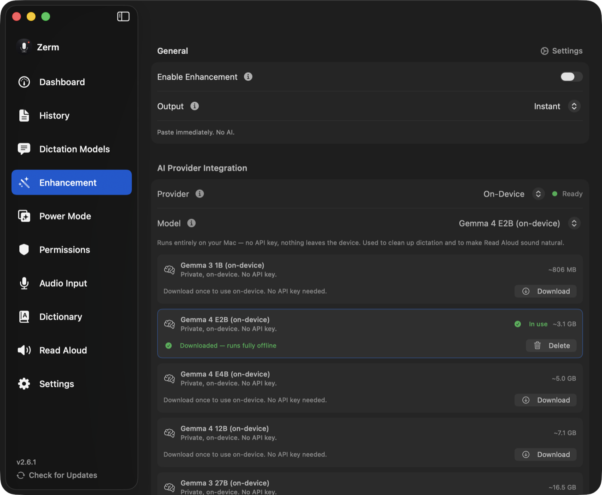

Dictation
Output modes
Instant, Instant + Refine, and Enhanced — what each one does to the text, and when the difference actually shows.
When a recording finishes, Zerm has to decide between two things you cannot have at
once: text in front of you immediately, or text that the AI has already improved. The
output mode is where you make that trade explicitly.

Instant
The transcript is pasted at your cursor the moment transcription finishes. No language
model is involved at any point — nothing is sent to a provider, nothing is waited on.
This is the fastest path in the app. Filler-word removal, your
dictionary replacements, and formatting still apply, because those
run locally and cost nothing.
Choose Instant if you dictate short messages, if you are offline, or if you would rather
fix the occasional word yourself than wait. Instant + Refine is the shipped default.
Instant + Refine
The transcript is pasted immediately — byte-for-byte the same path as Instant, with the
same latency. The enhancement then runs in the background and, when it comes back,
quietly replaces what was already typed.
The paste never waits for the model. If the enhancement fails, times out, or you have
already moved on, what you have is the raw transcript, which is exactly what Instant
would have given you.
Where in-place replacement works, and where it does not
Rewriting text that has already been typed into another application means writing
through the macOS Accessibility API, and not every application implements the parts
required to do that.
It works in native macOS text views — Mail, Notes, TextEdit, Xcode, most AppKit and
SwiftUI apps, and simple form fields.
It does not work in:
- Electron apps — Slack, Visual Studio Code, Cursor, Discord, Notion, and most of
the category. They expose a value and a selection but no working setter. - Web content in browsers.
contenteditablesurfaces nothing that can be set, which
covers most web apps. - Terminals — Terminal, iTerm, Ghostty, WezTerm, kitty, Alacritty, Hyper, Warp, and
the rest. The shell owns the line buffer; accessibility only mirrors a read-only
screen, so writing to it would be meaningless.
In all of those, Refine still runs — but instead of changing text you have already
typed, the refined version is offered to you, and what is on screen is left alone.
Nothing is silently rewritten, nothing is copied a second time, and nothing is
silently lost. Replacement is only allowed through a direct accessibility write;
Zerm never pastes the refinement via the clipboard.
Zerm does not guess. Terminals are on a fixed deny-list, and every other application is
probed once for a working setter; the answer is cached per app, so the second dictation
into a given app costs nothing to decide.
Refine is also skipped entirely while a password field is focused anywhere on the
system — Zerm will not so much as read the focused element in that state.
Enhanced
Zerm waits for the enhancement to return, then pastes once. Nothing appears until the
final text is ready.
It is the slowest of the three by exactly the round-trip time of your provider, and it
is the right choice when you want the pasted text to be final the moment it appears —
into a document, or into an app where Refine could only offer rather than replace.
The wait is bounded by the enhancement timeout, which defaults to 15 seconds. If it
expires, Zerm falls back to the raw transcript rather than losing what you said. See
AI enhancement for the timeout and retry settings.
Choosing
| Text appears | AI improves it | Good for | |
|---|---|---|---|
| Instant | immediately | never | speed, offline, short messages |
| Instant + Refine | immediately | afterwards, in native apps | everyday dictation (the default) |
| Enhanced | after the model | before you see it | when the first paste must already be final |
The mode is a global setting, but a Power Mode can turn enhancement
on or off per app and per website, which in practice is the finer control.